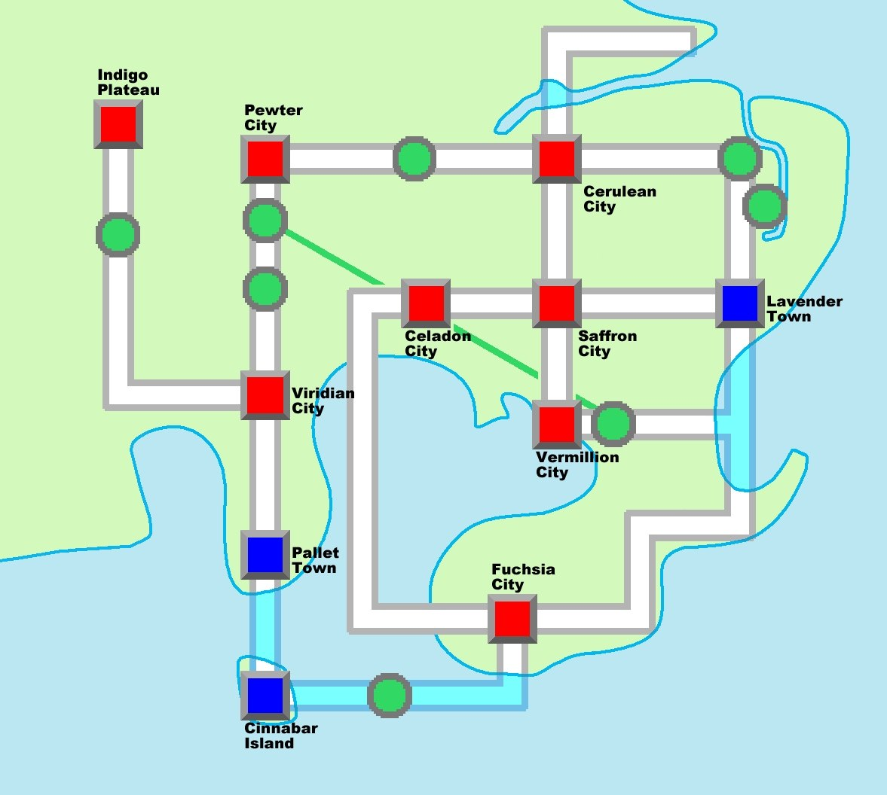

Приключение
Как я бродил по региону Канто
Путь от стартового города Паллет Таун до Лиги Покемонов (в дальнейшем просто Лиги)
The story
Моё приключение начинается в городе Паллет Таун,стартовый город,в котором всего 2 дома и Лаборатория.В одном из домов живёт мой игровой персонаж,ну то етсь Я,а во втором мой Игровой Соперник-NPC,который будет соревноваться со мной за титул ЧЕмпиона в Лиге.Сопернику можно дать любое имя,но я назвал своего каноничным Блю (Blue),исторически сложившимся именем для Соперника. В Паллет Тауне я и Блю получили от дедушки последнего,профессора Оука, стартовых покемонов.Подробнее о том,каких покемонов я брал,распишу в отдельной странице "Моя Команда"
Основная цель игры,как нетрудно догадаться,это Лига и финальный бой с Блю в ней.Но для того,чтобы попасть в Лигу,нужно собрать 8 значков,одолев соответствующее количество тренеров в 8 Залах (дальше гимах от слова Gym)
Конечная цель-одолеть Элитную Четвёрку и Блю в финале. Цели намечены,осталось лишь до них дойти.
Мой Маршрут по Канто
This map will show the locations I visited during my playthrough. I created the route myself to record my progress through the game.

Ключевые Вехи
-
Паллет Таун
Здесь я получил своего стартового покемона и сразился с Блю в ревый раз. Затем направился в город Виридиан (да,в Паллет Тауне настолько нечего делать,что в рассказе о нём я повествую о другом городе,ну не суть).Оттуда я забрал посылку для Оука, она нужна,чтобы Оук дал мне Покедекс-электронную энциклопедию о покемонах,которая заполняется при их поимке, и покеболы-шаровидные капсулы для поимки и хранения покемонов (не просто же так название серии Pokemon происходит от Pocket Monsters-Карманные Монстры). Влево от Виридиана есть Тропа,ведущая к лиге покемонов,но туда без 8 значков пока рано. Суть в том,что там в начале игры есть необязательная битва с Блю,и технически,на старте игры с ним можно будет встретиться уже 2 раза.Это только начало,в дальнейшем я буду пересекаться со своим виртуальным противником ещё очень и очень много раз.Получаю покеболы от профессора и иду дальше.
-
Получение Значков
Игра любезно расскажет базу о боёвке и поимке. О боёвке в отдельной странице с механиками,а поимка покемона понятна интуитивно:кидаешь шар в покемона и он пойман.Однако из сферы он может вырваться,но если на нём есть статусное состояние (Ожог,Сон,Лёд,Яд,Паралич) и/или у него мало показателей здоровья,то шанс этого кратно ниже. Следующие Ключевые точки в игре-8 городов с соответствующим Количеством тренеров и значков, тех самых,необходимых для прохождения лиги.Однако,помимо Блю,палки в колёса будет вставлять Команад Ракета-местная группировка рекетиров,которые грабят города и с особой жестокостью обращаются с покемонами.
-
Исследование Канто
Структура региона до боли проста и понятна,ибо игровой маршрут,по которому игрок следует с самого начала, закольцован.Т.е. начав свой путь в Паллет Тауне,игрок вернётся в него снова,там же путь снова путь до города Виридиан,а в нём уже,напоминаю,тропа до Лиги покемонов.
-
Путь Победы и Лига Покемонов
После 8 значков перед лигой игрока ждёт ещё одно испытание-Дорога Победы. Это сеть пещер и подземных переходов,которая усеяна головоломками,сильными тренерами и не менее сильными дикими покемонами. Следом уже идёт Лига,состоящая из Элитной четвёрки: Лорэлай-тренер Ледяных покемонов Бруно:специалист по боевым покемонам Агата:призрачный специалист Ланс:тренер драконов И,разумеется Битва с Соперником Блю.